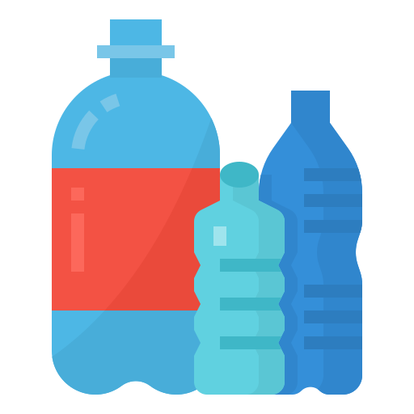

Добро пожаловать на сайт о экологии!
Здесь вы найдете все о правильной сортировке мусора, утилизации и зеленой энергии.
Как сортировать мусор?
Пластик
Пластик перерабатывается и используется для производства новых товаров.
Бумага
Бумага может быть переработана в новые листы бумаги или использована в упаковке.

Стекло
Стекло перерабатывается без потери качества, что делает его очень экологичным.
Знаки на упаковке
Знак на пластиковой упаковке
Знак на бумажной упаковке
Знак на стеклянной упаковке
Знак на упаковке органических материалов
Что происходит с отходами после сортировки?
После того как отходы отсортированы, они проходят несколько этапов, прежде чем быть переработанными или утилизированными. Процесс переработки имеет несколько ключевых этапов:
1. Сортировка
На специализированных заводах мусор проходит через различные этапы сортировки. Первоначально отходы делятся по категориям: пластиковые бутылки, картон, стекло, органика и другие. Для этого используются механические устройства, такие как магниты, вибрационные конвейеры и системы с воздушными потоками.
Важно, чтобы отходы были правильно отсортированы на этапе их сбора, так как это помогает значительно упростить переработку.
2. Переработка
Переработка отходов имеет разные этапы в зависимости от материала. Например, пластиковые бутылки моются, измельчаются и перерабатываются в новые изделия, такие как игрушки, текстиль, упаковки или строительные материалы. Бумага перерабатывается в новые листы, стекло плавится и перерабатывается для повторного использования в производстве.
Металлы, такие как алюминий, могут перерабатываться практически бесконечно без потери качества. Это позволяет значительно сократить потребность в добыче новых металлов.
3. Утилизация
Некоторые отходы не могут быть переработаны и отправляются на утилизацию. В процессе утилизации, такие отходы могут быть сожжены на заводах для получения энергии. Например, мусоросжигательные заводы могут вырабатывать электричество, которое потом подается в сеть.
Также утилизируемые отходы могут быть захоронены на свалках, но в современных условиях часто используются методы, такие как компостирование для органических материалов.
Почему это важно?
Переработка отходов помогает сократить количество мусора на свалках, что предотвращает загрязнение окружающей среды и экономит ресурсы. Кроме того, переработка помогает снизить выбросы углекислого газа, улучшая климат.
Зеленая энергия
Зеленая энергия — это энергия, которая производится с использованием возобновляемых источников, таких как солнце, ветер, вода и биомасса. Эти источники считаются экологически чистыми, потому что они не загрязняют окружающую среду и не исчерпываются с течением времени.
1. Солнечная энергия
Солнечные панели преобразуют солнечные лучи в электричество с помощью фотогальванических элементов. Это один из самых популярных и доступных способов получения энергии, особенно в странах с солнечным климатом. Солнечные панели могут быть установлены на крышах домов, на сельскохозяйственных угодьях или даже в пустынных районах, где солнце светит круглый год.
Кроме того, солнечные панели не выбрасывают вредных веществ в атмосферу и требуют минимального ухода.
2. Ветряная энергия
Ветровые турбины используют силу ветра для производства энергии. Эта энергия используется в таких странах, как Дания, Германия и США, где есть большие площади с сильными ветрами. Ветряные турбины могут быть установлены как на суше, так и на море. Современные технологии позволяют значительно повысить эффективность этих установок.
Ветряные фермы обеспечивают электричеством миллионы домов и помогают снизить зависимость от угольных электростанций.
3. Гидроэнергия
Гидроэнергетика использует силу падающей воды для вращения турбин, которые генерируют электричество. Это самый старый и проверенный способ получения возобновляемой энергии. Вода в реке или водохранилище имеет большую потенциальную энергию, которая может быть использована для производства электричества.
Однако важно, чтобы строительство гидроэлектростанций не приводило к разрушению экосистем и не нарушало природный баланс рек.
4. Биомасса и биогаз
Биомасса — это органический материал, который может быть использован для получения энергии. Это могут быть отходы с сельскохозяйственных предприятий, такие как солома, древесина, а также органические отходы, которые подвергаются переработке в биогаз. Биогаз в свою очередь может использоваться как топливо для автомобилей или для выработки электроэнергии.
Использование биомассы способствует снижению выбросов углекислого газа и уменьшению зависимости от угля и нефти.
Почему зеленая энергия?
Зеленая энергия играет важную роль в борьбе с климатическими изменениями. Она помогает снизить выбросы углекислого газа, которые являются основными виновниками глобального потепления. Переход на возобновляемые источники энергии также помогает сократить использование ископаемых видов топлива, таких как нефть и уголь, которые не только исчерпываются, но и наносят ущерб окружающей среде.
Образование по экологии
Образование по экологии включает в себя изучение всех аспектов взаимодействия человека с природой, а также осознание важности устойчивого развития. На разных уровнях образования экологические знания помогают людям принимать осознанные решения для сохранения окружающей среды.
1. Экологическое образование для детей
С раннего возраста детям важно объяснять основные принципы экологии: как важно беречь природу, экономить воду, сортировать мусор и использовать ресурсы ответственно. Включение экологии в школьные программы помогает воспитать новое поколение, которое будет понимать важность заботы о планете.
Проектирование экологически чистых школ, посадка деревьев, участие в акциях по очистке территорий — все эти мероприятия дают детям практическое понимание важности экологии.
2. Образование для взрослых
Для взрослых, особенно тех, кто работает в области производства, промышленности или в государственных учреждениях, важно понимание экологических норм и стандартов. Это включает в себя обучение методам переработки отходов, энергосбережению, устойчивому использованию ресурсов и соблюдению экологических стандартов на работе.
Все больше людей становятся частью экологических движений и участвуют в волонтерских проектах, направленных на решение экологических проблем.
3. Университеты и курсы по экологии
В университетах и специализированных курсах обучают экологии, охране окружающей среды, устойчивому развитию и зеленой энергетике. Эти знания востребованы в таких отраслях, как сельское хозяйство, энергетика, управление природными ресурсами и даже в промышленности, которая переходит на более экологичные технологии.
Инвестиции в образование по экологии помогают развивать новые технологии и методы работы, которые будут помогать решать глобальные экологические проблемы.
Почему важно образование по экологии?
Экологическое образование помогает людям осознать важность защиты окружающей среды и дает инструменты для решения проблем, с которыми сталкивается планета. Чем больше людей будут осведомлены об экологических проблемах и решениях, тем больше шансов у нас есть для сохранения природы для будущих поколений.
Интерактивная карта
На этой карте вы можете найти пункты сбора вторсырья и центры переработки в вашем регионе.